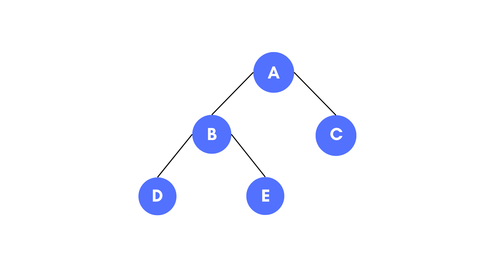

Binary search Tree
What is a Binary Search Tree?
A Binary Search Tree (BST) is a binary tree in which each vertex has only up to 2 children that satisfies BST property
All vertices in the left subtree of a vertex must hold a value smaller than its own and all vertices in the right subtree of a vertex must hold a value larger than its own
Attributes: Each vertex has at least 4 attributes: parent, left, right, key/value/data (there are potential other attributes)
Application of Binary Search Trees
- Binary Trees: Used to implement expression parsers and expression solvers.
- Binary Search Tree: used in many search applications where data are constantly entering and leaving
- Heaps: used by Java Virtual Machine to store Java objects
- Treaps: used in wireless networking.
Structure of a Binary Search Tree
Trasversal Functions
- Inorder, you traverse from the left subtree to the root then to the right subtree. (Left, Root, Right)
- Preorder, you traverse from the root to the left subtree then to the right subtree. (Root, Left, Right)
- Post order, you traverse from the left subtree to the right subtree then to the root. (Left, Right, Root.)